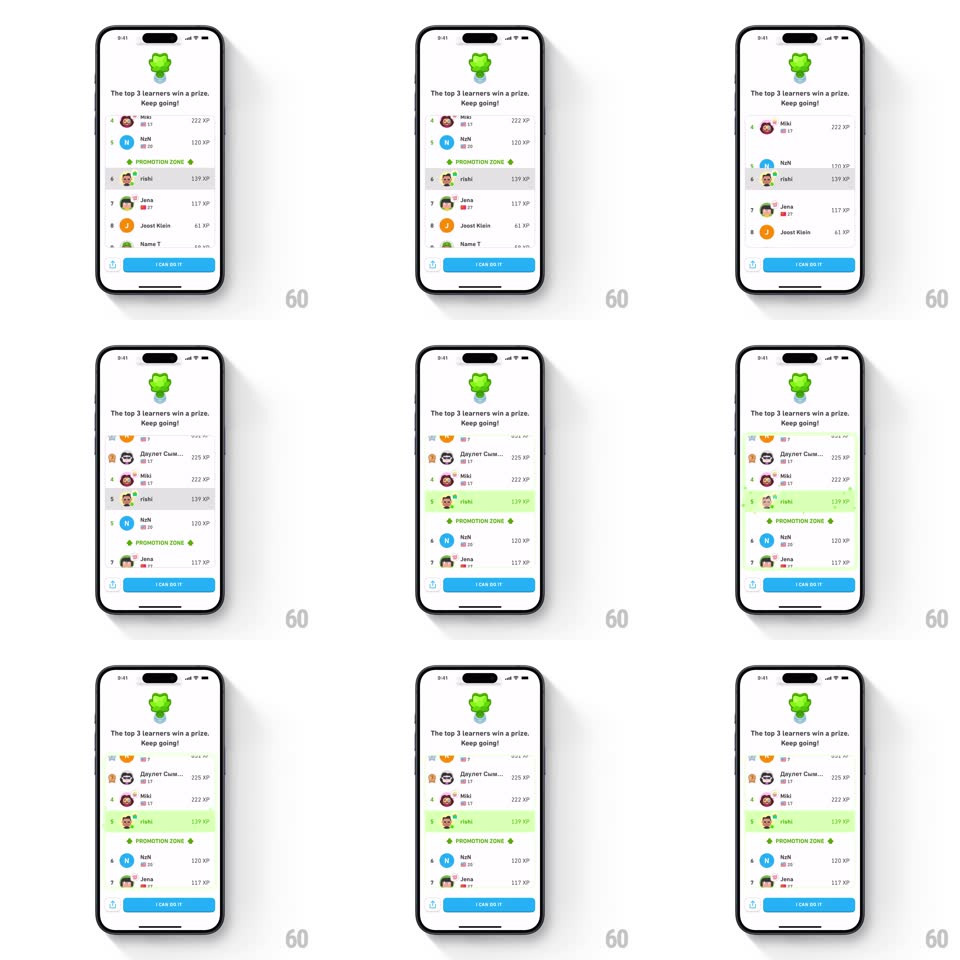

Media
Frame-by-frame

Rebuild this animation 1:1: Duolingo's leaderboard promotion - the user's row animates up past a rival into the green promotion zone, flashing with a highlight and a small particle burst.

Rebuild this animation 1:1: Duolingo's leaderboard promotion - the user's row animates up past a rival into the green promotion zone, flashing with a highlight and a small particle burst. ## Integration Integration: stack-agnostic spec - springs given as stiffness/damping, timed motions as duration + curve; map every value to your framework and animation library of choice. ## Scene A league leaderboard: an owl badge and "The top 3 learners win a prize. Keep going!" up top, rows of ranked learners (avatar, name, XP), a "PROMOTION ZONE" divider, and an "I CAN DO IT" button at the bottom. ## Motion spec Pattern: row reorder with promotion highlight, ~1.2s. - Reorder: the user's row slides up past the row above it (translateY one row height, 450ms, spring ~300/24) while the displaced row slides down into the vacated slot (same timing) - a clean swap, both moving at once. - Zone cross: as the user's row passes the PROMOTION ZONE divider, the row flashes green (background tint 0 -> 1 -> 0.15, 400ms). - Burst: a small confetti/sparkle burst (8-10 pieces) pops from the row's rank badge as it lands (radial spread ~40px, fade out 400ms). - The list scrolls slightly to keep the user's row centered during the move (300ms, ease-in-out). - XP totals update with a number flip (150ms) when the rows settle. ## Calibration - The swap is simultaneous - the two rows pass each other, never jump. - The green flash peaks exactly as the row crosses the divider line. ## Reduced motion Rows crossfade into their new order; no burst. ## Don't miss - The divider stays fixed while rows move past it. - Rank numbers swap with their rows.